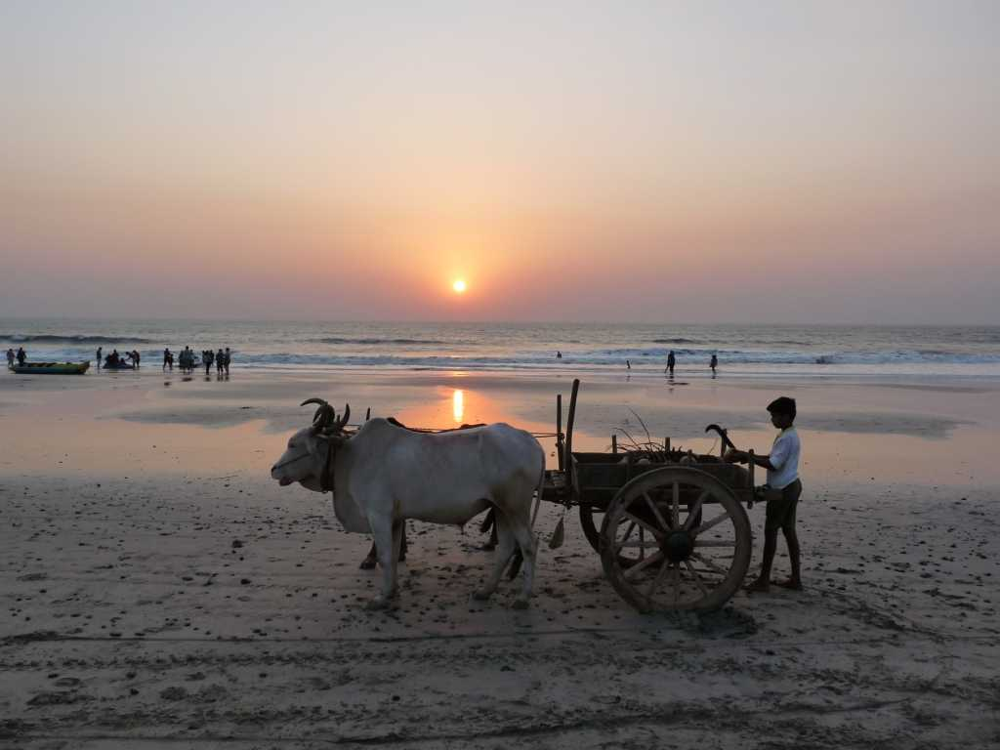
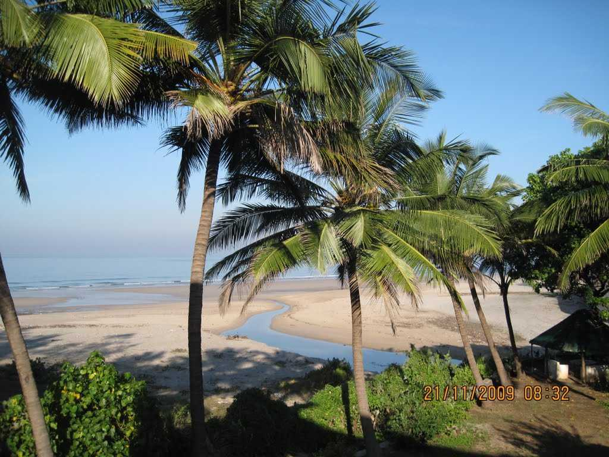
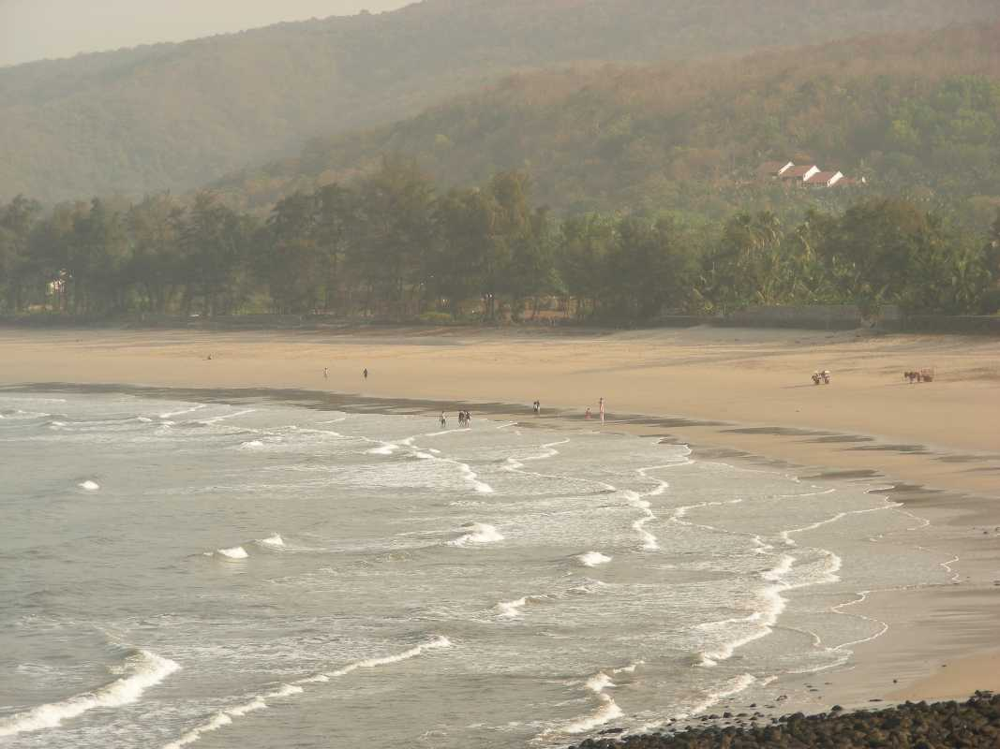

|  |  |  |
Located almost 30 km from Alibaug and 125 km from Mumbai, Kashid Beach is situated on the coasts of Arabian Sea. Famous for its beautiful white colour sand, Kashid is one of the cleanest beaches in north Konkan. The beach is stretched across 3 km and surrounded by shrubs and trees called Casuarina. One can indulge in watersports, go night camping and enjoy the beautiful night sky or just go for horseriding on the beach. Visit Murud Janjira Fort located at a distance of 20 km from Kashid for a slice of history. Towering up from a massive rock amidst the stretching azure of the Arabian Sea, this fort has stood the test of time as well as the test of resilience in the past. Weekends at Kashid beach are quite crowded so it would be best to visit on weekdays.